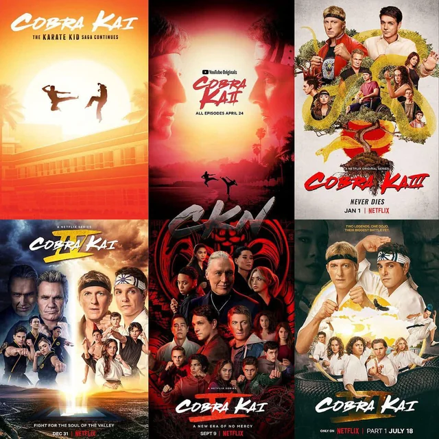

Cobra Kai: A Saga Completa
1ª Temporada
Johnny Lawrence busca redenção ao reabrir o dojo Cobra Kai, treinando Miguel contra o bullying. Daniel LaRusso vê sua paz ameaçada pelo retorno do dojo, reacendendo a rivalidade histórica de 1984.
2ª Temporada
O Cobra Kai ganha fama, mas a chegada de John Kreese traz uma filosofia agressiva. Daniel abre o Miyagi-Do para ensinar defesa pessoal, resultando em uma guerra escolar com consequências trágicas.
3ª Temporada
Após a briga brutal, Miguel luta para andar e os dojos são interditados. Johnny e Daniel viajam em busca de respostas e percebem que precisam se unir para derrotar a influência sombria de Kreese.
4ª Temporada
O destino do karatê no Vale será decidido no Torneio All Valley. O vilão Terry Silver retorna para ajudar Kreese, usando métodos cruéis para testar a aliança entre Johnny e Daniel.
5ª Temporada
Terry Silver expande o império Cobra Kai pela cidade. Daniel conta com a ajuda de Chozen para enfrentar a expansão, enquanto Johnny tenta resgatar Miguel em uma jornada pessoal no México.
6ª Temporada
Com Silver derrotado, os alunos se preparam para o Sekai Taikai, o maior torneio mundial. Novos segredos sobre o mestre Miyagi surgem, exigindo um nível de maestria nunca visto antes.
7ª Temporada
A rivalidade chega ao ápice no palco mundial. As fronteiras entre mestre e aluno se confundem enquanto o destino do karatê é decidido em combates finais pela glória e pelo legado.